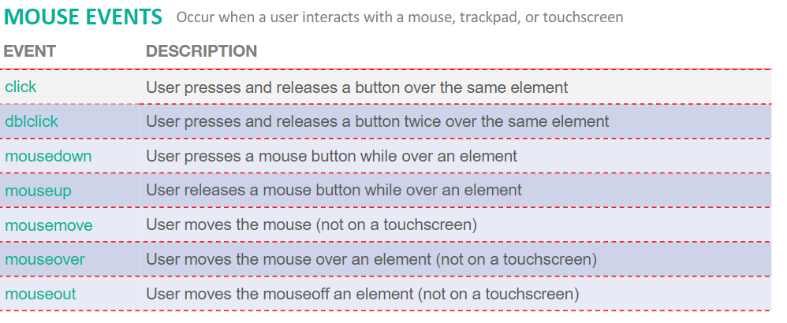

Shanjing's Dev Blog
Week 2
I have learnt html and css!
CSS
Cascading style sheet known as CSS. It is used for designing the appearance of the website. Some function of CSS is modifying the color, size and position of content. There are three type of css style. The first type is is the Inline Style. The second type is Style Element. The third type is Link Element/External Style Sheet. There is also id attribute and class attribute in css to name and identify content.
HTML
Hypertext Markup Language known as HTML is where it contains the content and structure of the website.
I have learnt the different types of semantics. For example the header, nav and many more.
Header
For header it can be used usually used for navigation or introductory content. header tags are often used in article tags it can contain 1 or more heading tags for example h1 to h6.Commonly used for news content, blog posts or independent content piece.
Nav
Nav tag is usually for location of the menu links.This is for key navigation elements in the site and NOT for every link in a site.
Typography
I have also learnt how to use google fonts for my website.
Week 3
I got to learn more CSS, Media queries, flex, and the use of Adobe XD for our website wireframe!
Tags
Form tag come with action and method. Action contains the URL to send form data to. Method contains the type of HTTP request. The input tag creates interactive controls.
The "type" attribute determines the type of input
Reading Reference: https://developer.mozilla.org/en-US/docs/Web/HTML/Element/inputID
CSS Box Model
- Content - The content of the box, where text and images appear
- Padding - Clears an area around the content. The padding is transparent
- Border - A border that goes around the padding and content
- Margin - Clears an area outside the border. The margin is transparent
Media queries
- Media Query -
Used to modify the CSS of a site depending on
qualities such as viewport size or device type
- @media -
Applies one or more CSS properties based on the
result of a media query
- Min-width -
If the minimum width of the viewport is at least
the specific width or wider, then the media
query is true
- Max-width -
If the maximum width of the viewport is at no
more than the specified width, or it’s narrower
then the media query is true
Positioning
- Relative Position -
Moves elements around relative to
where they would appear on the page. Uses
Nudging boxes around. Think of the offsets as being applied
after the browser finishes laying out
the page. Uses Top, Left, Right, Bottom
properties
- Absolute Position -
Absolute position elements are placed in relation to a
parent content(browser viewport, or parent element).
The parent is the positioning context. Positions can be modified using positioning offsets,
top, right, bottom, left
- Fixed Position -
Very similar to absolute EXCEPT the
coordinate system is relative to the
entire browser window.
Fixed elements don't scroll with the
rest of the page.
Commonly known as sticky elements.
- Relative Absolute -
Allows us hook back into the static flow of the page
Flexbox
The flexbox container is the parent of the flex item.
The children of the flexbox container can be laid out in horizontal or vertical easily and flex their
size when the content grows or shrink accordingly
Wireframe
Like a blueprint for a site or app's
layout
Shows important functionality
Conveys content types and grouping
Shows information hierarchy. WIREFRAMES ARE NOT VISUAL DESIGN, TYPOGRAPHY, ICONOGRAPHY, PHOTOGRAPHY!!
Week 4
In this week i have learned how to use Responsive Images for flexible layouts, better understand flex layouts, Using Git & Github Pages!
Responsive Images
We learnt how to scale images size down! A common trick is to use a very large image > 1920px width to
fix the issue of not being able to scale it down!
Github
- Learned how to create a new repository.
- Learned how to clone the copy of the repository into my visual studio code project.
- Learned how to push and commit to github page.
- Learned how to publish my repository so other users can see my deployment.
Week 5
Spent the week at home learning javascript through the Asynchronous lesson!!
Javascript was pretty similar to C-sharp. The LinkedIn video tutorial were pretty useful.
Week 6
I got to recap what i have learnt in week 5 and also javascript objects & more!
Object Oriented Programming (OOP)
OOP are Objects group together a set
of variables and functions to
create a model of an object in real-life.
Let
- let declarations are not
hoisted to the top of the
enclosing block.
- let is block-scoped meaning it
only exist within the braces it
is contained in {...}.
Loops
The for and while loops are the same concept i have learnt in semester 1 python programming.
Week 7
I got to learn Document Object Model (DOM), Event Handling & Validation and JSON Local Storage!
Document Object Model (DOM)
Official (Closed) - Non Sensitive
As a browser loads a webpage,
it creates a model of that page.
The model is called a DOM Tree. I have also learned how to locate the node that represents the element i want to work with and the use of its text content, child elements, and attributes.

Event Handling & Validation

Event Validation
To validate we must add event handler to the keyUp event,
add event handler to the blur event,
add event handler to the submit and many more.
JSON Local Storage
- HTML5 Storage is based on named key/value pairs. You store data based
on a named key, then you can retrieve that data with the same key. The
named key is a string.
- The data can be any type supported by JavaScript, including strings,
Booleans, integers, or floats. However, the data is actually stored as a
string.
- If you are storing and retrieving anything other than strings, you will need to
use functions like parseInt() or parseFloat() to coerce your retrieved data
into the expected JavaScript data type.
- Web storage (or HTML5 storage) lets you store data
in the browser.
- The data it stores can only be accessed by the
domain that set the data.
- There are two types of storage: local and session
- They are implemented using the localStorage and
sessionStorage objects.
- Both local and session storage have the same
methods to get and set data, but each lasts a
different amount of time.
Week 8
I have learned JQuery and API this week!!
JQuery
Using one line of JQuery code we can perform the same results of multiple lines of javascript code. JQuery is much more efficient!
>

Asynchronous JavaScript and XML (AJAX)
- AJAX is a technique for loading data into part of a
page without having to refresh the entire page. The
data is often sent in a format called JavaScript
Object Notation (or JSON)
- The ability to load new content into part of a page
improves the user experience because the user
does not have to wait for an entire page to load if
only a portion of the page is being updated
- Live search (or autocomplete) commonly uses Ajax. Eg. Google
search. When you type into the search bar on the home page,
sometimes you will see results coming up before you have
finished typing
- Websites with user-generated content (such as
Twitter and Flickr) may allow you to display your
information (such as your latest tweets or
photographs) This involves collecting data from their
servers or tapping on APIs
- When a browser comes across a "script" tag, it
will typically stop processing the rest of the
page until it has loaded and processed that
script. This is known as a synchronous
processing model.
- With AJAX, the browser can request some data from a
server and once that data has been requested,
continue to load the rest of the page and process the
user's interactions. This is known as asynchronous (or
non-blocking) processing model.
- Once a page has loaded, if you want to update
what the user sees in the browser, typically you
would refresh the entire page. This means the
user has to wait for a whole new page to
download and be rendered by the browser
- With AJAX, if you only need to update a part of the
page, you can just update the content of one element.
This is done by intercepting an event (user clicks on
link or submits a form) and requesting new content
from the server via an asynchronous request.
How does AJAX WORKS?
- AJAX lets you build webpages that ask for information from a
web server. The web server returns data to the web browser,
and JavaScript processes that data to selectively change parts
of the web page
- The amount of data the server returns is usually much
less than that sent when you ask for a full webpage
- The process of asking a server for information
is technically called making a request of the server
- And when the server sends back its answer, that's
called a response.
Application Programming Interface (API)
What is API? It basically take a request , deliver it and bring back a response.
- Without API:
An app finds the current weather
in London by opening
http://www.weather.com/ and
reading the webpage like a
human does, interpreting the
content.
- With API:
An app finds the current
weather in London by sending a
message to the weather.com
API (in a structured format like
JSON). The weather.com API
then replies with a structured
response.
Week 9
Spent the week at home learning Bootstrap through the Asynchronous lesson!!
- Bootstrap has come a long way and it was
developed out of “boredom” by developers who
wanted a faster way to create User Interfaces and
to resolve all the nooks and crannies imposed by all
the various browsers and devices.
- With today’s variety of devices, we have an issue in
keeping up to technology advances.
- Bootstrap is one such framework that allows us to
simplify our development process
Week 12
I have learn RestDB and NoSql this week!!
NoSql
- NoSQL, or most commonly known as
Not only SQL database, provides a
mechanism for storage and retrieval of
unstructured data.
- This type of database can handle a
humongous amount of data and has a
dynamic schema. So, a NoSQL
database has no specific query
language, no or a very few
relationships, but has data stored in
the format of collections and
documents
- So, a database can have a ‘n’ number
of collections and each collection can
have ‘m‘ number of documents.
RestDB
I have learned how to create my own database using restdb. There are also four action that can be made post, put delete and get.
- Get - Retrieve data from database
- Post - Post data up to the database
- Put - Update data that are stored in the database
- Delete - Delete existing data in th database
Week 14
This week, I have learned how to insert a lottie animation into my website!!
Lottie Animation
Lottie is a great way to perform animations and
allow additional interactivity on your site or
mobile platforms. A Lottie is a JSON-based animation file format
that enables designers to ship animations on
any platform as easily as shipping static
assets. They are small files that work on any
device and can scale up or down without
pixelation.
Below is an example of a lottie animation.